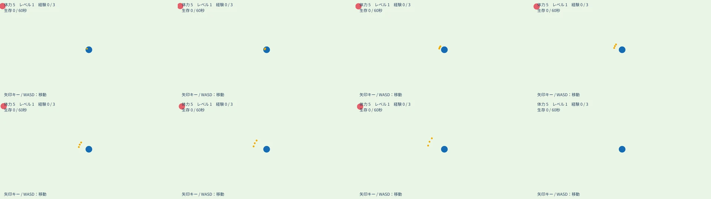

自動攻撃サバイバルの発展
移動して敵を避け、自動攻撃と強化を使って60秒生き残ります。
始める前に
ZIPを展開してできたフォルダーでindex.htmlを開きます。基本編の完成版から始めます。ZIPには基本編の3ファイルが入っています。
WindowsでZIPを展開する（動画）
作業用フォルダーのscript.jsを編集します。各ステップで保存し、index.htmlを再読み込みしてください。
クラスはデータと処理の設計図です。constructorはnewで作るときに呼ばれ、thisは作られた一つ一つのインスタンスを指します。
ステップ 1：3方向へ弾を出す
このステップの見本を図で見る

このステップの見本
const directionX = distance > 0 ? dx / distance : 1;
変わったコードの一例（script.js）const angle = distance > 0 ? Math.atan2(dy, dx) : 0;
見本で確かめること
敵がいると3方向へ弾が飛びます。
目標
狙った方向とその左右へ弾を出します。
書く場所と置き換えるコード
敵の方向を角度にする
Game.shoot() で位置の差を求める行の下に追加します。
目印
const dx = target.x - this.player.x, dy = target.y - this.player.y, distance = Math.hypot(dx, dy);追加するコード
const angle = distance > 0 ? Math.atan2(dy, dx) : 0;Math.atan2(dy, dx) は横と縦の差から向きの角度を返します。角度の単位はラジアンで、1周は約6.28です。距離0なら角度0、つまり右向きです。
3方向へ弾を出す
Game.shoot() の次の3行を置き換えます。
置き換える範囲
const directionX = distance > 0 ? dx / distance : 1;
const directionY = distance > 0 ? dy / distance : 0;
this.bullets.push(new Bullet(this.player.x, this.player.y, directionX * 300, directionY * 300));置き換えるコード
for (const offset of [-0.25, 0, 0.25]) {
if (this.bullets.length < limitBullets) this.bullets.push(new Bullet(this.player.x, this.player.y, Math.cos(angle + offset) * 300, Math.sin(angle + offset) * 300));
}offset の−0.25、0、0.25ラジアンは、中央の角度とその両側へのずれです。0.25ラジアンは約14度です。Math.cos() で横、Math.sin() で縦の向きを作り、それぞれ300を掛けます。1発ずつ弾数を確かめ、上限100を越えないようにします。
保存して再読み込みし、敵へ向かって3方向に弾が飛ぶことを確かめます。
保存後の確認
保存してゲーム画面を更新する（動画）
index.html を再読み込みします。敵がいると3方向へ弾が飛びます。 この段階の見本を開く
小さな練習
真ん中の弾に足す角度はいくつですか。
練習の答え
0です。
ステップ 2：速い敵を加える
このステップの見本を図で見る
kind="normal" → speed=48, hp=2
初期攻撃力1なら2発必要
kind="fast" → speed=78, hp=1
初期攻撃力1なら1発で倒れる
ゲーム画面とコードの前後を見る
このステップの見本
this.enemies.push(new Enemy(x, y));
変わったコードの一例（script.js）this.enemies.push(new Enemy(x, y, Math.random() < 0.35 ? "fast" : "normal"));
見本で確かめること
速く動く敵が混ざり、1回の攻撃で倒せます。
目標
速い敵と通常の敵を混ぜます。
書く場所と置き換えるコード
敵の種類で速さと体力を変える
Enemy の constructor() の次の2行を置き換えます。
置き換える範囲
constructor(x, y) {
this.x = x; this.y = y; this.radius = 14; this.hp = 2; this.speed = 48;置き換えるコード
constructor(x, y, kind = "normal") {
this.x = x; this.y = y; this.kind = kind; this.radius = kind === "boss" ? 28 : 14; this.hp = kind === "boss" ? 12 : kind === "fast" ? 1 : 2; this.speed = kind === "boss" ? 35 : kind === "fast" ? 78 : 48;kind は種類です。"fast" は体力1・毎秒78、"normal" は体力2・毎秒48です。"boss" 用の値もここで用意し、次のステップで登場させます。
敵をランダムに選ぶ
Game.spawn() の敵を追加する行を置き換えます。
置き換える範囲
this.enemies.push(new Enemy(x, y));置き換えるコード
this.enemies.push(new Enemy(x, y, Math.random() < 0.35 ? "fast" : "normal"));Math.random() が0.35未満なら速い敵、それ以外は通常の敵です。
種類に応じた色で描く
Game.draw() の敵を描く行を置き換えます。
置き換える範囲
ctx.fillStyle = "#e45f6a"; for (const enemy of this.enemies) { ctx.beginPath(); ctx.arc(enemy.x, enemy.y, enemy.radius, 0, Math.PI * 2); ctx.fill(); }置き換えるコード
for (const enemy of this.enemies) { ctx.fillStyle = enemy.kind === "boss" ? "#8b5ab4" : enemy.kind === "fast" ? "#da8518" : "#e45f6a"; ctx.beginPath(); ctx.arc(enemy.x, enemy.y, enemy.radius, 0, Math.PI * 2); ctx.fill(); }敵ごとに種類に応じた色を選んで円を描きます。
保存して再読み込みし、通常の敵と速い敵が別の色で現れることを確かめます。
保存後の確認
速く動く敵が混ざり、1回の攻撃で倒せます。 この段階の見本を開く
小さな練習
速い敵の速さは通常より毎秒何ピクセル大きいですか。
練習の答え
78 − 48で30ピクセルです。
ステップ 3：30秒で大きな敵を出す
このステップの見本を図で見る
29.95 >= 30 は false
まだ大きな敵は出ない
elapsed>=30 && !bossSpawned
HP12の大きな敵を出す
!true → false
2体目は追加しない
ゲーム画面とコードの前後を見る
このステップの見本
this.level = 1; this.xp = 0; this.damage = 1; this.interval = 0.6; this.state = "playing";
変わったコードの一例（script.js）this.level = 1; this.xp = 0; this.damage = 1; this.interval = 0.6; this.state = "playing"; this.bossSpawned = false;
見本で確かめること
30秒になると大きな敵が1体現れます。
目標
生存30秒で大きな敵を1体出します。
書く場所と置き換えるコード
大きな敵を出したか覚える
Game の constructor() で次の行を置き換えます。
置き換える範囲
this.level = 1; this.xp = 0; this.damage = 1; this.interval = 0.6; this.state = "playing";置き換えるコード
this.level = 1; this.xp = 0; this.damage = 1; this.interval = 0.6; this.state = "playing"; this.bossSpawned = false;bossSpawned は大きな敵をすでに出したかを表します。false から始めます。
30秒後に1体出す
Game.update() で通常の敵を出す行の下に追加します。
目印
if (this.spawnTimer <= 0) { this.spawn(); this.spawnTimer = 1; }追加するコード
if (this.elapsed >= 30 && !this.bossSpawned && this.enemies.length < limitEnemies) { this.enemies.push(new Enemy(20, 225, "boss")); this.bossSpawned = true; }30秒以上で未出現、かつ敵が60体未満なら大きな敵を追加し、bossSpawned を true にします。上限に達している場合は空きができるまで待ちます。大きな敵は半径28、体力12、毎秒35で移動します。
保存して再読み込みし、30秒を過ぎると大きな敵が1体現れることを確かめます。
保存後の確認
30秒になると大きな敵が1体現れます。 この段階の見本を開く
小さな練習
大きな敵を一度出した後、毎フレーム追加しますか。
練習の答え
bossSpawnedがtrueになるため追加しません。